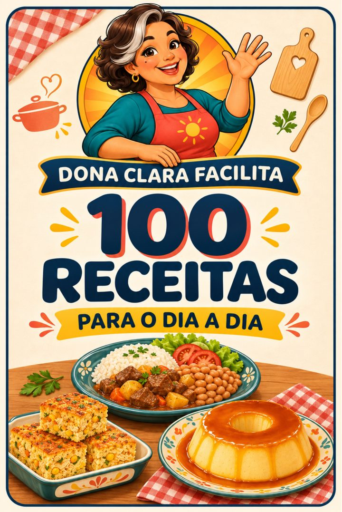
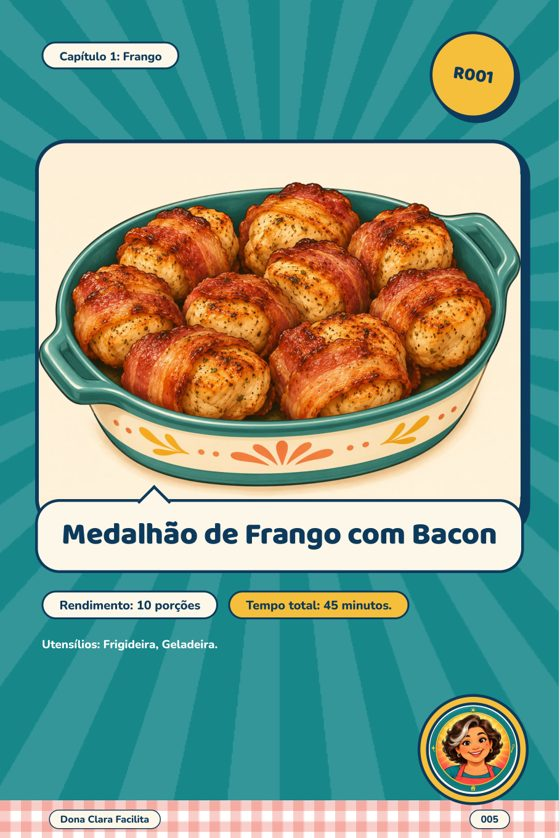
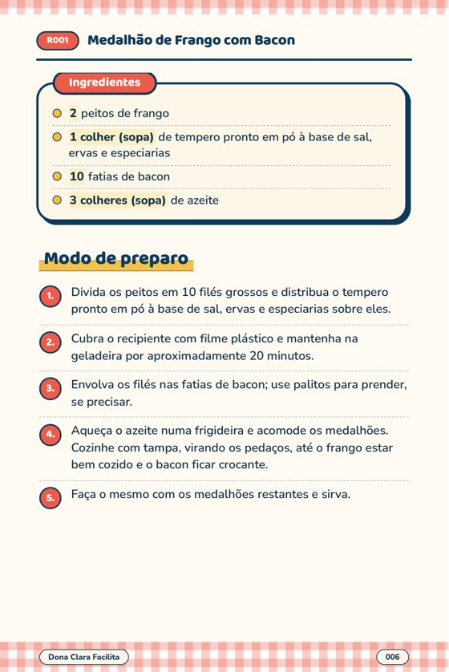
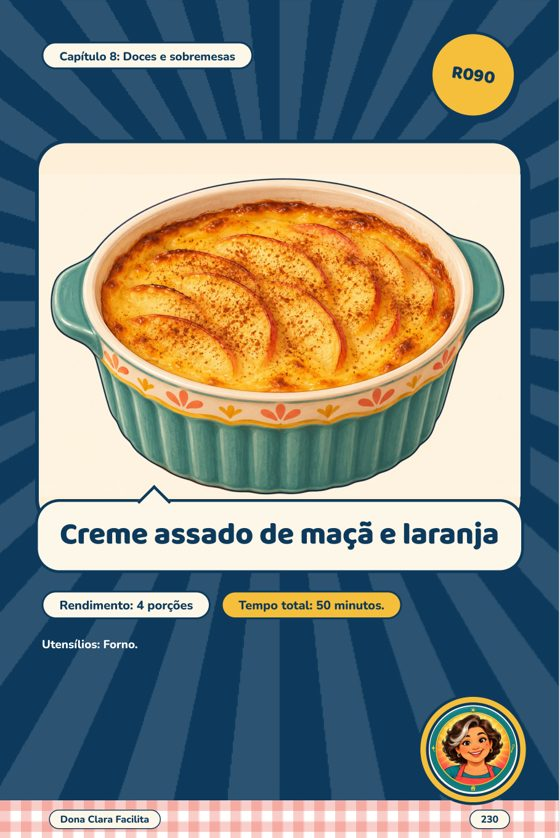
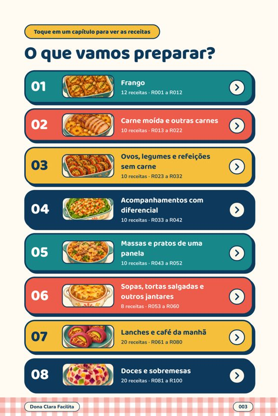

Sem ideia do que cozinhar hoje? 100 receitas prontas para escolher.
E-book em PDF com 100 receitas para almoço, jantar, lanches e doces. Ingredientes em lista, preparo numerado e uma ilustração em cada prato.

Quero o e-bookE-book digital em PDF. Você recebe o acesso por e-mail depois da compra.
A pergunta de todo dia
São cinco da tarde e a pergunta volta: o que vai ser hoje? Você abre o celular, acha dezenas de receitas soltas, em sites diferentes, com instruções que cortam no meio, e acaba fazendo de novo o que já faz de sempre.
O e-book da Dona Clara junta tudo em um só arquivo: receitas escolhidas por serem fáceis e saírem do básico, no mesmo formato, com o que você precisa na página.
O que tem dentro
- 100 receitas organizadas em 8 capítulos, de frango e carnes a acompanhamentos, sopas, lanches e sobremesas.
- Sumário clicável: toque no capítulo, depois no nome da receita, e você chega direto nela.
- Ingredientes em lista, com a quantidade em destaque, para conferir o que falta antes de começar.
- Modo de preparo numerado, na ordem em que as coisas acontecem.
- Rendimento e tempo total no início de cada receita.
- Uma ilustração por receita, para você saber o que esperar do prato.
- Feito para o celular: página vertical, letra grande, sem precisar dar zoom.
Dê uma olhada por dentro
Estas são páginas reais do e-book. Deslize para ver.




Por que ter as receitas num livro só
Receita grátis na internet não falta, e muita é boa. O que costuma faltar é achar rápido, no mesmo padrão, sem anúncio no meio e sem perder a página quando o celular apaga a tela.
Este e-book não promete que todo prato vai sair perfeito nem substitui a sua experiência na cozinha. Ele é um jeito organizado de escolher o que fazer e acompanhar o preparo com clareza.
Para quem faz sentido
- Quem cozinha em casa e quer variar o cardápio da semana.
- Quem gosta de receita com ingredientes comuns, mas com um toque diferente.
- Quem prefere ter tudo num arquivo só, no celular, em vez de procurar de novo toda vez.
Não é um plano alimentar nem material de dieta ou saúde: é um livro de receitas.
Dona Clara Facilita, 100 receitas para o dia a dia
- E-book em PDF com 100 receitas
- 60 de almoço e jantar, 20 de lanches e café da manhã, 20 de doces
- Acesso por e-mail depois da confirmação do pagamento
- Pagamento único, sem mensalidade
Pagamento único pela Cakto.
Quero o e-bookReembolso em até 7 dias corridos após a compra, pelo canal da Cakto.
Perguntas frequentes
É um livro físico?
Não. É um e-book digital em PDF. Não há envio pelo correio.
Como eu recebo?
Depois da confirmação do pagamento, o acesso chega no e-mail usado na compra. Se não encontrar, olhe a caixa de spam e, se precisar, fale com a gente em rdm1producoes@gmail.com.
Dá para ler no celular?
Dá. O PDF foi montado em página vertical, com letra confortável para a tela do celular. Também abre no computador.
Preciso de equipamentos especiais?
Cada receita informa os utensílios que usa logo no início. As receitas usam o que normalmente existe numa cozinha de casa, como panelas, frigideira e forno, conforme a receita.
Quais tipos de receita tem?
São 60 receitas de almoço e jantar, 20 de lanches e café da manhã e 20 de doces e sobremesas, em 8 capítulos.
E se eu não gostar?
Você pode pedir reembolso em até 7 dias corridos após a compra, pelo canal de reembolso da Cakto: reembolso.cakto.com.br.
Como falo com o suporte?
Pelo e-mail rdm1producoes@gmail.com.
Cozinhar fica mais leve com o caminho à vista
Se a pergunta de todo dia é "o que vai ser hoje?", o e-book responde com 100 opções no mesmo lugar.
Quero o e-book